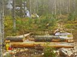
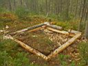
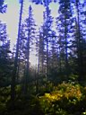
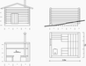

НАША МАША
(рабочее название новой зимухи на Мамае :)
[ 1 ] - [ 2 ] - [
3 ] - [ 4 ]
9.09.2007
Ездил выбирать место, потому что вариантов было несколько, надо было посмотреть спокойно.
Спокойно доехал на велосе, поднялся по лавинному выносу, подсел на камушек и стал глядеть на кулуары, что с Трех Берез, на выкат из Северного цирка, на кулуар, что мы с Лехой в марте катали. Долго сидел, даже ноги успел высушить у костра. Потом решил за кунг сгонять, посмотреть, там вроде между Высоким цирком и выкатом из центрольного лесок какой-то был. Но он там совсем маленький оказался, там все деревья на зимуху можно положить и на дрова не останется. Да и склоны рядом грозные, одна хорошая лавина - и пипец всему лесочку :) А место по части подъезда к нему из Центрального, Южного и с Лесного очень выгодное так-то. Короче, вернулся обратно, к кулуарам Трехберезовым. И пошел под ними бродить. В итоге нашел местечко козырное :) Леса строевого много, елки толстые. Дров навалом. Вода рядом. Черника и кислица в изобилии. Солнце светит, тепло и красиво. Может зимой его и меньше будет, но утром в окошко будет очень рано всех будить :) В общем, клевое место. Даже кедры там есть, столетние. Возле одного зимуху и построим. Как же без кедра :)
Да, я еще завез инструмент, гвоздей, одежду рабочую, коврик, котелок, и т.п.
15-16.09.2007
К выходным готовился заранее, самое главное купил. Купил жужик, это такая маленькия и легкая бензопила Stihl 180. Даже в Слюдянке заправил у знакомого бензином и немного обкатал. Новые пилы надо конкретно обкатывать, чтобы хорошо работали. Вообще там в них столько заморочек (бенз, масло такое, масло другое, свечи, цепи, обкатка, шум и вонь и т.п. гемор). Что я даже подумал, а нахрен вообще ее брал, лучше бы топор хороший и по-старинке, изба с топора. Ну еще и с пилы, обыкновенной. Тихо, мирно и без лишнего шума. А с бензопилы одно растройство - после первой заправки она благополучно заткнулась и больше не заводилась. Пришлось запасную свечку поставить, потом заработала и даже дров мне напилила. Уже хорошо.
Теперь за бригаду. Леха Пестов еще в начале недели в Питер уехал, к брату на свадьбу. Тока сначала выбор места одобрил и сказал - начинай, приеду, все построим. Еще Артем Н-ский тоже приедет и тоже все построит. Вова Язык в эти выходные днюху свою отмечал и похоже снял ресторан и кучу друзей пригласил на это дело, потому как на Мамай я его не так и не заманил. Сказал, что надо строить 3х4, и что вот на следущей неделе возьмет отгулы, возьмет братана и друга братана, и мы все нафик сразу построим :) Ладно. Поеду один фундамент закладывать. Я от такой перспективы не обломался, потому как надо и в самом деле все на месте в одну каску подумать и принять решение по размерам и по месту конкретному и пару бревен бросить. Да и пилу правильно дообкатывать. Да и не один я поехал, а с Моей Девушкой :) Она как раз по лесу соскучилась и хотела прогуляться. Короче, морально приготовились к дождю, ну там сапоги резиновые, дождевики, баннер для навеса. Потому как дождь обещали на все выходные.
Приехали. Я тащил наверное свой самый тяжелый рюкзак за лето - баннер, пила, ГСМки, еще гвоздей и еще всякую хрень, ну килограмм на 30 короче. Притащились все мокрые, хотя дождья пока не было, это так, остатки вчерашнего собрали по дороге. Замутили навес, костер, пообедали. Пила тарахтела, первый бак вырабатывала. Потом заткнулась. Потом я с ней возился, потому как опыта нету и чего с ней делать читал по инструкции. Поставил шину с цепью, завел и бегал с ней по лесу аки маньяг, ну так, чисто для прикола :) Напилил заодно дровишек тонкомерных. Потом место для зимухи конкретное присматривал, а то там склон кругом, да деревья кругом растут, да пеньки кругом торчят или камни. В итоге где с самого начала хотел, там колышки и застолбил. Но немного там копать конечно надо, чтобы пол в итоге выровнять, но это потом. Сейчас по плану надо толстое бревно в фасад заложить. Нашел офигенную елку и начал ее потихоньку пилить, потому как пила новая, надо потихоньку. Да и страшно, блин, такую дурынду валить. Я ж не разу таки здоровые деревья не валил. Ужос нах, пипец как она громко упала! Прости меня, дерево!
Отпилил 3 метра, попробовал поднять. Хренушки. Покатили мы ее под горку. Немного прокатили, а дальше деревья стали мешали. Пришлось разворачивать бревно и подкладывать маленьки чурбачки, и по ним и катить. Короче, минут полчаса мы его таранили до места, а потом я подруге и говорю: "Ну, все теперь ты МУЖЕЧЁ!". А она говорит: "Не, это ты МУЖЕЧЁ, а я Девушка". А я говорю: "Нормальные девушки под дождем бревна на таранят, наверное ты тогда Тётка Конкретная!". А она свое гнет: "Девушка я, и пошел ты в пень со своими тетками и мужечём!" :) На том и порешили, а дождь как шел, так и идет. Я пока это бревно шкурил и на место укладывал, промок конкретно, дождевик по швам протекает, и холодно уже, осень. Вот стою у этого бревна и думаю: да. Вот это блин, попали мы с зимухой конкретно, лета блин мало было, сезон дождей ждали. А ну как снег еще пойдет? Это если на сноуборде по снегу то наверное хорошо, а с топором наверное не очень.. Пригрузился, короче, стою и мокну... А Девушка под навесом у костра сидит и говорит: "А не обломаться ли тебе с этой стройкой? В смысле на сегодня. Вон и темнеет уже. Давай-ка лучше киселя замутим?!". "Так мы же сахар взять забыли!" - говорю. "Ну так а мы конфет накидаем. Короче, неси дрова!"
Сварили кисель и потащили его в соседнюю зимуху, которую Малюк с Тугариным в прошлом году строили. Потому что под навесом как-то уж совсем холодно и печально стало жить, а уж тем более ночевать. А в зимушке в той печки нету, и двери нету, и окон нету, точнее аж три окна, только они без стекол. Ну я этот вариант предусмотрел и все окна заделал полиэтиленом, и дверь завешал, и даже дырку от трубы заткнул. Теперь жить можно и кисель пить, и даже ужинать при свечах. Ну а что холодно немного, так это даже клево, это же к зиме надо готовить молодые организмы и вобще...
А дождь идет и идет, идет и идет. И ночью, и на утро тоже. Моя Девушка и говорит: "Это такой дождь надолго, и нифига он не кончится, и я даже никуда из зимухи не пойду, и даже из спальника не вылезу. Только когда на электричку надо будет идти, тогда и вылезу." А мне скучно стало, одел я ее штаны, типа непромокаемые, одел свои дождевик, типа тоже непромокаемый и пошел посмотреть, как там моя пила лежит, и как бревно лежит. Вышел на большую тропу, иду по лужам. А навстречу люди идут, два человека, тетка и мужик с сумкой. Говорят: "Чувак, ты откуда идешь, ты туда не ходи, там снег выпал! Мы с перевала идем, хотели пофотать красоты местные, а там такая пампера, что ну короче... Уже один фотик промочили, валить надо отсюда!" И дальше пошли. А я на свою стройку пошел, на бревно повтыкать.
Ну постоял возле бревна, повтыкал минут десять, а потом стал инструменты собирать и ныкать, потому что холод собачий, и все непромокаемые вещи очень даже на мне хорошо промокают, под таким-то дождем. Ливень, в натуре. Обломалась стройка на сегодня. Заныкал всё по кустам, и даже баннер, а пилу с собой взял, ну она же легкая и новая, че ее не взять. Вернулся короче в зимуху, в которой Моя Девушка спала, пристроился рядом и тоже уснул. И приснилось нам, что мы пошли на электричку под дождем и по лужам, а сапоги у нас хоть и резиновые, а вода в них как-то все равно попадает и хлюпает там. Ну еще веник из рябины нарвали, типа для красоты, еще к бабе Ире зашли чай попить, а потом еще на электричке поехали в Слюдянку. А потом проснулись и оказалось, что мы и правда в Слюдянке! Вот проглючило, так проглючило! И с чего бы это нас так проглючило? С киселя наверное... :)
21-22-23.09.2007
Ну, короче. Короче я буду писать, а то за прошлый раз что-то много понаписал... Опять народ на стройку стеной не поднялся. Вова на работе пашет, у его брата чего-то там клинануло, а у друга брата ... ну короче. Взял я на пятницу отгул на работе и поехал на три дня один. Хоть маленько поковыряюсь, пока погода хорошая.
Пятница. Дошел нормально, вот только медведа стремался, хрен его знает, может он еще и не наелся к зиме. По дороге стучал по камням специально обученной лопатой, типа предупреждал потенциального косолапого, сидящего за поворотом, что идет человек и не пошел бы он куда подальше. В смысле, медвед. Короче, все нормально. Пришел, навес переделал на более ровном месте, потому как решил в зимуху не ходить на ночлег, а спать у костра. Да, костер. Собрался его разводить и не могу найти спички! Оказывается я забыл взять свой козырный мешочег, в котором у меня жили спички, зажигалка, фонарик, аптечка и даже мыло! Сказачный далбайоп, на три дня один в лес пошел! Положение выручила газовая горелка с пьезоподжигом и немного бенза на дровишки. Короче, костер у меня горел все три дня и все две ночи, без остановки!
Поел, пошел работать. Выкопал боковые канавки и положил еще два бревна к первому большому. Копать пришлось, потому как место не ровное, но в общем-то только под бревна, а это немного. Остальное можно позже выкопать, пол выровнять и все такое. Опять проблема с жужиком. Чудо немецкой бензолесоповальной технологии стало глохнуть ни с того, ни с сего. А свечки запасной нет и чего дальше делать не знаю. Оставил на завтра. Завтра, по данным разведки, должны подойти улан-удэнцы, байкальские экстрималы во главе с Сергеем Лавиновичем. Типа тоже будут строить к зиме, на своем поляне, или ремонтировать, а то у них за лето бичи баннеры потырили и поломали навес. Может у них свечку выциганю или скажут чего. А пока весь в расстроеных чувствах обламывался топором и цепной пилой.
Блин, устал я к вечеру и мозоли натер. Еще шкурил эти два бревна специально обученной лопатой. Еще копал. Вечер так незаметно подкрался. И тучки тоже подкрались. А я еще баннер не натянул. Да и навес так поставил, что весь дым под него. Пришлось переделывать. И дрова на ночь наготовить. А потом отдыхать! Залез в теплый спальник, лежу и смотрю на костер. Задремал. Проснулся, дровишек подкинул, опять на костер повтыкал и опять задремал. Проснулся, небо светится, луна облачность подсвечивает. Костер подзаправил, полежал и опять уснул. И так до утра. И самое что интересно - вроде все ночь не спал, дрова подкидывал и ворочался, а все равно выспался! И отдохнул. И даже как-то на душе хорошо стало.
Суббота. Да, хорошо. Работать даже хочется в выходной день, вот как хорошо. А дождик-то начался и даже идет. Мельчайший, его почти не видно, а все равно, все потихоньку мочит. Одел черный плащ, с капюшоном и до пят. Мне его на работе подогнали, тяжелый такой. А после обеда дождь разошелся и я решил сходить в гости к улан-удэнцам, а то голоса уже давно слышно было, до и на полный желудок работать как-то не очень. Так вот, они сказали, что в таком плаще наверное не надо ходить в лесу, а то можно людей напугать. И еще они мне за пилу рассказали, как ее лечить надо. Дима Яскин на моцике приехал. Он за Штили тоже многое знает. И еще про магазин Сергей рассказывал, у них "триал-спорт" открывается скоро. И вообще много интересного поговорили. Ну Серега он такой, его не переслушаешь, а у меня костер под дождем, пойду я уже наверное к себе.
Выкопал канавку под четвертое бревно и положил его, ну там пазы в углах, все дела типа "в лапу". Потом бензопилу лечил. Оказывается надо выкрутить свечку, перевернуть пилу вверх ногами (!) и много раз подергать за веревочку, типа чтобы в дырочку вылетело масло и прочие отходы жизнедеятельности. Главное, что это сработало! Пила завелась и жужжала как миленькая. Напилил кучу дров на ночь, и еще от той первой поваленной елки отпилил два отрезка и начал второй венец ложить на радостях. Тот который с дверным проемом. Короткую часть сделал, и стемнело опять. Блин, в 9 уже темно. Поужинал и пошел к людям пообщаться. А людей прибавилось, еще ребята подошли, тоже байкальские экстрималы. В общем, хорошо посидели. Под конец давай страшилки рассказывать. Мне потом очень прикольно было одному возвращаться по темноте, через лес без тропы, к своему родному костру, навесу и спальнику. Ну не совсем в темноте, луна опять подсвечивала через плотные облака, но все же...
Воскресенье. Все таки клево у костра ночевать. Ночью просыпался, толкал заранее приготовленные чурбачки и они ловко скатывались в костровую яму. Нью текнолоджи :) Ни забот, ни хлопот. Да и дождя не было. Весь кончился. День обещался быть солнечным. Доделал вторую часть дверного проема и подумал, что жалко такой день поганить выходом на электричку в три часа, когда можно до 9-ти нормально строить. Короче, решил остаться тут жить. И начал остальные бревна второго венца ложить. Ну то есть полный цикл - завалить дерево, отпилить бревно, децл ошкурить, выбрать паз по всей длине, потом на место ложить и остальные пазы по концам, по углам подгонять. Ничего пока не скреплял гвоздями, не шкурил и мох тоже пока не ложил. Шкурить потом можно, а моха нету нифига. Тот что растет в округе, маленький совсем, жалко экологию нарушать, да и некогда. Думаю, надо или паклю занести, или запенить нафик все щели пеной. Да, шкурить. Оказывается не до конца ошкуренное бревно под дождем покрывается типа слизью какой-то, причем очень мерзко и обильно. И эти шкурки, эта кора тоже самое - в слизь превращается. Ее надо сразу "фтопку", иначе подскальзываться замучаешься. Ну это так, к слову.
В общем, к вечеру получилось то, что на фотографиях, только еще одно бревно я потом позже положил, его на фото нет. Прилично вроде все выглядит, и солидно. Мне нравится :)



В сумерках уже попрятал вещи строительно-бытовые, собрал рюкзак и пошел к цивилизации. Луна клево так проводила, дорогу подсвечивала из-за спины. Вариантов в цывиле было три - или на трассе застопить машинку, или попроситься к бабе Ире на ночлег, или ночевать под мостом. Первый вариант позволял утром появиться вовремя на работе, но он обломался. Видимо не было желающих садить в машину на ночь глядя чувака с бензопилой в руках :) Второй вариант тоже обломался, потому как у бабы Иры уже свет в окошке не маячил и будить пожилого человека своими проблемами я както постеснялся. А погода хорошая была, и я даже не стал возвращаться к мосту, а заночевал я возле хутора в лесочке, прямо под звездами. Хоть и без костра и навеса, но все равно приятно было :) Вот только цывильные паровозы достали ночью колесами стучать об рельсы, в натуре...

Теперь за планы на будущее. В выходные 29-30 сентября я отдыхаю от стойки, потому как уже надо, да и дела у меня семейные запланированы, вот. Тем товарищам, кто продолжит начатое, посвящается следущее:
Что надо занести: еще один баннер или тент. Если будет тент, то его надо растянуть над стройкой, чтобы дождь (снег) не мешали за шиворот падать. Баннер тоже можно забубенить сверху, только надо будет стойки нагородить грамотно, чтобы не мешались потом. Лучше тент.
Еще надо гвоздедер, чтобы большие гвозди выдергивать. Еще можно гвозди занести, по кило на 200 и на 150. Забивать их без меня никуда не надо!
Что надо делать: самое главное - выровнять пол, пока земля не замерзла. Землю рядом не кидайте, лучше надо взять кусок брезента (или от мешка сахарного полиэтилен армированый) и уносить землю немного в сторону, в кучу, а то эта глина потом везде будет грязью возле зимухи. Потом ошкурить положенные бревна до конца. Еще можно дырки под бревнами заделать, подложить обрезки какие-нибудь и землей присыпать, типа завалинки сделать. Еще надо от поваленных елок доотпиливать строевые бревнышки, а ветки порубить в костер.
Что не надо делать: не надо рубить ничего между зимухой и речкой, а то там и так для маскировки от бичей леса маловато, рубить надо выше по склону, от туда и таскать легче. И не надо рубить маленькие елочки возле зимухи, пусть растут :) Те два венца, что уже лежать - не скреплять гвоздями, там еще надо подгонять пазы.
Вот, у меня тут даже чертежи имеются (со змеевиком и с конусом :)

По вопросу поиска заныканного в кустах инструмента - надо звонить мне, расскажу где искать. (полчаса игры в "остров сокровищ" вам будут обеспечены :) ... продлжение читайте здесь ...
[ 1 ] - [ 2 ] - [
3 ] - [ 4 ]
Слюдянка, сентябрь 2007 .А.Б.
 Don`t
worry, Be Happy !
Don`t
worry, Be Happy !